前言
为了方便大家看的方便，我这里将这几天的东西整合一下发出。
里面的例子请使用手机浏览器查看。
什么是jQuery Mobile？
jquery mobile是jquery在移动设备上的版本，他是基于jquery、HTML5、CSS3构建的，他提供了一个丰富的交互性强的接口用以兼容不同移动平台。
于是我们去下载一番：
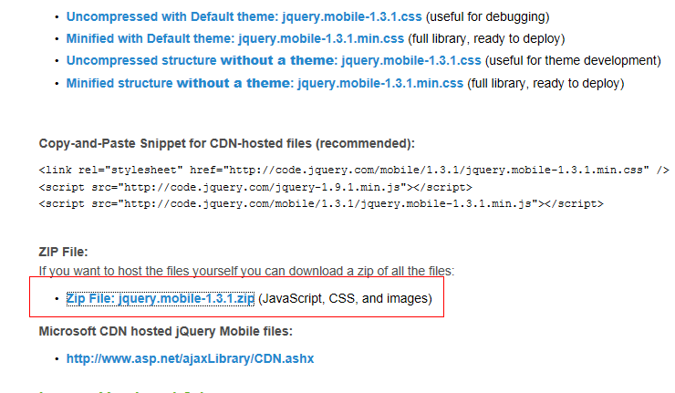
我这里就直接下载的这个压缩文件了，完了我们看看他有些什么东西，我们这个还是要依赖jquery的，所以还是准备一个吧。
这个东东是个好东西哦，他还有配套的样式呢，依赖他我们可以开发一套不错的手机应用呢。
自定义属性
在jquery mobile中，是使用自定义属性驱动页面的（data-....），比如：
data-role
定义元素在页面中的角色，该属性允许定义不同的组件元素及页面视图：data-role="page"
data-title
定义jquery mobile视图页面标题
data-transition
定义视图切换的动画效果
data-rel
定义具有浮动效果的视图
data-theme
指定元素或者组件内主题样式风格
data-icon
在元素内增加小图标
data-iconpos
定义小图标位置
data-inline
指定按钮根据内容自适应其长度
data-type
定义分组按钮水平或者垂直方向排布
data-rel
定义具有特定功能的元素，例如data-rel="back"返回按钮
data-add-back-btn
指定视图页面自动在页眉左侧添加返回按钮
data-back-btn-text
指定由石头页面自动创建的返回按钮的文本内容，该属性的使用通常都需要和data-add-back-btn配合
data-position
该属性是实现在滑动屏幕时工具栏的显示和隐藏状态
data-fullscreen
用于指定全屏视图页面
data-native-menu
指定下拉选择功能采用平台内置的选择器
data-placeholder
设置下拉选择功能的占位符
data-inset
实现内嵌列表功能
data-split-theme
设置列表右侧图标的主题样式风格
data-filter
开启列表过滤功能
搞了这么多自定义属性，我们也不知道什么是什么，所以不如来试一试吧。
页面与视图
页面与视图作为移动web应用程序最重要的用户界面之一，他主要承担整个web应用程序的界面呈现工作。
jquery mobile提供一套自定义元素属性用于搭建各种页面和视图。
1 <!DOCTYPE html> 2 <html xmlns="http://www.w3.org/1999/xhtml"> 3 <head> 4 <title></title> 5 <meta name="viewport" content="width=device-width, initial-scale=1"> 6 <link href="jquery.mobile-1.3.1.css" rel="stylesheet" type="text/css" /> 7 <script src="jquery-1.7.1.js" type="text/javascript"></script> 8 <script src="jquery.mobile-1.3.1.js" type="text/javascript"></script> 9 </head> 10 <body> 11 <div data-role="page"> 12 <div data-role="header">页头 13 </div> 14 <div data-role="content">内容 15 </div> 16 <div data-role="footer">页脚 17 </div> 18 </div> 19 </body> 20 </html>
http://sandbox.runjs.cn/show/itndsvbq
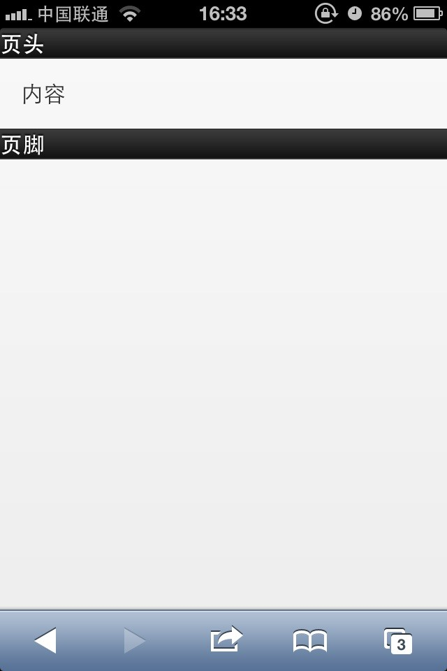
不要说还是有点感觉的。。。
我们在实例中使用div元素作为视图页面的布局元素但是我们这里改为html的元素更加好：
1 <!DOCTYPE html> 2 <html xmlns="http://www.w3.org/1999/xhtml"> 3 <head> 4 <title></title> 5 <meta name="viewport" content="width=device-width, initial-scale=1"> 6 <link id="jquerymobile_120" rel="stylesheet" type="text/css" class="library" href="/js/sandbox/jquery-mobile/jquery.mobile-1.2.0/jquery.mobile-1.2.0.css"> 7 <script id="jquery_182" type="text/javascript" class="library" src="/js/sandbox/jquery/jquery-1.8.2.min.js"></script> 8 <script id="jquerymobile_120" type="text/javascript" class="library" src="/js/sandbox/jquery-mobile/jquery.mobile-1.2.0/jquery.mobile-1.2.0.min.js"></script> 9 </head> 10 <body> 11 <section data-role="page"> 12 <header data-role="header">页头 13 </header> 14 <article data-role="content">内容 15 </article> 16 <footer data-role="footer">页脚 17 </footer> 18 </section> 19 </body> 20 </html>
多视图web页面
前面只有一个视图，我们现在来看看多视图页面怎么处理：
1 <!DOCTYPE html> 2 <html xmlns="http://www.w3.org/1999/xhtml"> 3 <head> 4 <title></title> 5 <meta name="viewport" content="width=device-width, initial-scale=1"> 6 <link id="jquerymobile_120" rel="stylesheet" type="text/css" class="library" 7 href="/js/sandbox/jquery-mobile/jquery.mobile-1.2.0/jquery.mobile-1.2.0.css"> 8 <script id="jquery_182" type="text/javascript" class="library" 9 src="/js/sandbox/jquery/jquery-1.8.2.min.js"></script> 10 <script id="jquerymobile_120" type="text/javascript" class="library" 11 src="/js/sandbox/jquery-mobile/jquery.mobile-1.2.0/jquery.mobile-1.2.0.min.js"></script> 12 </head> 13 <body> 14 <section data-role="page" id="v1"> 15 <header data-role="header">视图一 16 </header> 17 <article data-role="content"> 18 <a href="#v2">去视图二</a> 19 </article> 20 <footer data-role="footer">页脚 21 </footer> 22 </section> 23 <section data-role="page" id="v2"> 24 <header data-role="header">视图二 25 </header> 26 <article data-role="content"> 27 <a href="#v1">去视图1</a> 28 </article> 29 <footer data-role="footer">页脚 30 </footer> 31 </section> 32 </body> 33 </html>
http://sandbox.runjs.cn/show/l4vejd6v
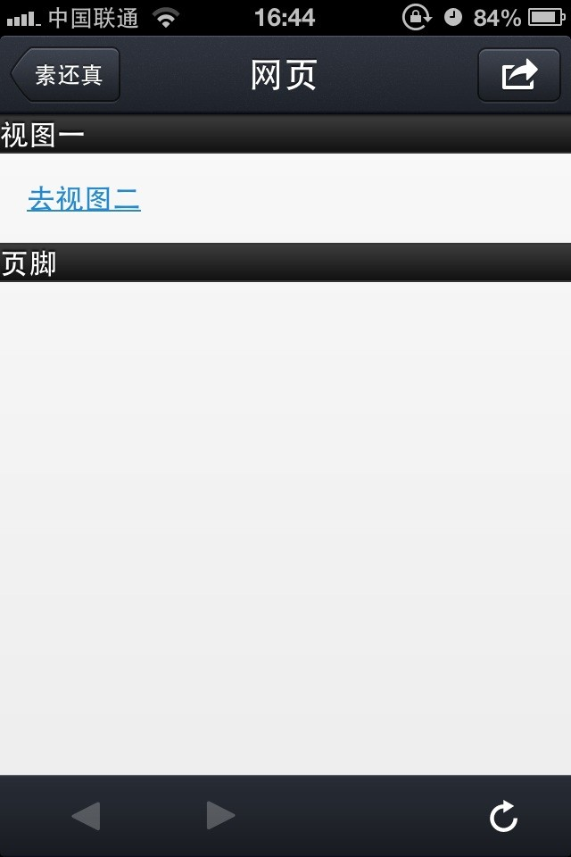
我们点击超链接可以在视图一与视图二切换，你会发现还有一点点动画效果呢！！！
PS：在此若是设置了data-title将改变手机上title的标题
动画
我们可以设置6钟动画效果：
① Slide 从右到左切换
② Slideup 从下到上切换
③ Slidedown 从上到下切换
④ Pop弹出框方式打开
⑤ Fade 渐变褪色方式
⑥ Flip飞入飞出方式
这里我就不截图了，我私下试试去。
<a href="#v1" data-transition="pop">去视图1</a>
效果感觉不错哦！！！
dialog对话框
只要在标签的data-rel设置了dialog属性，视图就具有dialog浮动层效果。
<a href="#v2" data-rel="dialog">去视图二</a>
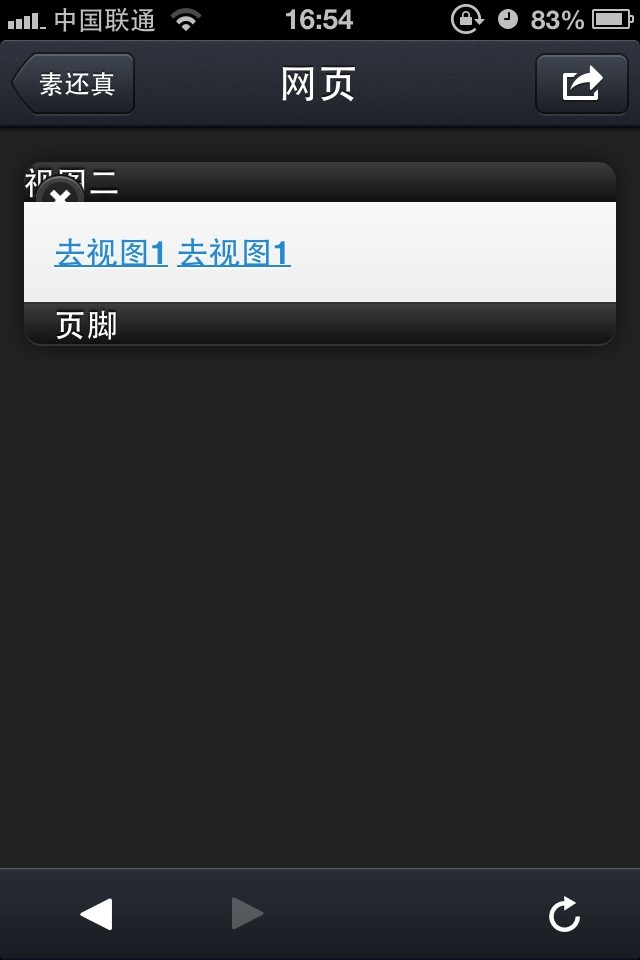
这里有点表现不佳，我们暂时不管他。
页面主题
<section data-role="page" id="v1" data-theme="a">
关于自定义属性的东西暂时写到这里，我们来看看我们比较重要的按钮。
按钮
按钮在移动web应用程序中式非常重要的用户界面组件，主要用作为用户提供各种操作入口和视图交互功能，我们的jquery mobile提供了很多不错的按钮。
1 <!DOCTYPE html> 2 <html xmlns="http://www.w3.org/1999/xhtml"> 3 <head> 4 <title></title> 5 <meta name="viewport" content="width=device-width, initial-scale=1"> 6 <link id="jquerymobile_120" rel="stylesheet" type="text/css" class="library" 7 href="/js/sandbox/jquery-mobile/jquery.mobile-1.2.0/jquery.mobile-1.2.0.css"> 8 <script id="jquery_182" type="text/javascript" class="library" 9 src="/js/sandbox/jquery/jquery-1.8.2.min.js"></script> 10 <script id="jquerymobile_120" type="text/javascript" class="library" 11 src="/js/sandbox/jquery-mobile/jquery.mobile-1.2.0/jquery.mobile-1.2.0.min.js"></script> 12 </head> 13 <body> 14 <div data-role="button">我是按钮</div> 15 </body> 16 </html>

于是我们的按钮就出现啦，在页面上独占一行。
input 中button、submit等也都变成了这个样式了
小图标
jquery mobile提供了一套小图标：

图标太多，我这里简单列两个：
delete：删除，data-icon="delete"
plus：加号，data-icon="plus"
PS:设置data-iconpos="notext"便可以只要图标不要文字
1 <div data-role="button" data-icon="delete">删除</div> 2 <div data-role="button" data-icon="delete" data-iconpos="notext">删除</div> 3 <div data-role="button" data-icon="delete" data-iconpos="right">删除</div>
http://sandbox.runjs.cn/show/xd9axexu
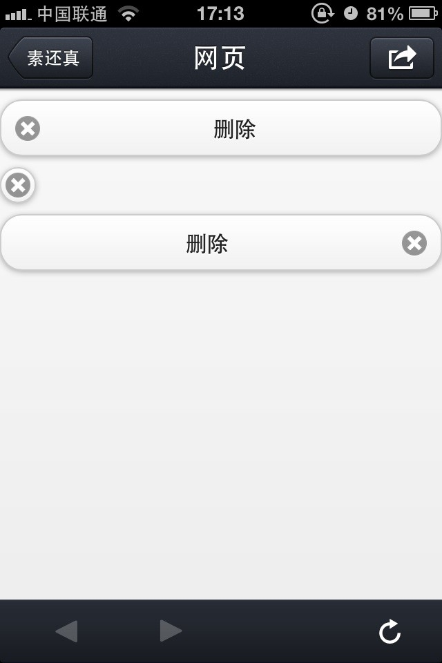
若是系统提供的图标不能满足条件的话，便可以自定义图标
data-icon="myapp-email"
myapp-email就是自定义图标的名称（需要上传）
css中对应的样式是.ui-icon-myapp-email
自定义图标大小是18*18，建议png-8
按钮分组
1 <!DOCTYPE html> 2 <html xmlns="http://www.w3.org/1999/xhtml"> 3 <head> 4 <title></title> 5 <meta name="viewport" content="width=device-width, initial-scale=1"> 6 <link id="jquerymobile_120" rel="stylesheet" type="text/css" class="library" 7 href="/js/sandbox/jquery-mobile/jquery.mobile-1.2.0/jquery.mobile-1.2.0.css"> 8 <script id="jquery_182" type="text/javascript" class="library" 9 src="/js/sandbox/jquery/jquery-1.8.2.min.js"></script> 10 <script id="jquerymobile_120" type="text/javascript" class="library" 11 src="/js/sandbox/jquery-mobile/jquery.mobile-1.2.0/jquery.mobile-1.2.0.min.js"></script> 12 </head> 13 <body> 14 <div data-role="controlgroup" data-type="horizontal"> 15 <div data-role="button" data-icon="plus"> 16 添加</div> 17 <div data-role="button" data-icon="delete"> 18 删除</div> 19 <div data-role="button" data-icon="refresh"> 20 修改</div> 21 </div> 22 <div data-role="controlgroup" data-type="horizontal"> 23 <div data-role="button" data-icon="plus"> 24 添加</div> 25 <div data-role="button" data-icon="delete"> 26 删除</div> 27 <div data-role="button" data-icon="refresh"> 28 修改</div> 29 </div> 30 </body> 31 </html>
http://sandbox.runjs.cn/show/u7cydmrv
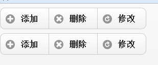
感觉还不错的说，这里还可以为各个按钮设置主题，看起来就更加有分别了。
Bar 工具栏
工具栏也是一重要组件，我们这里结合前面的按钮来完成一完整的工具栏。
jquery mobile提供两组工具栏：
Headers bar
充当视图页面的标题作用，在一般情况下header bar位于页面的顶部，一般包含2按钮
Footer bar
这个工具栏一般位于尾部，就是与header bar对应的东东
初体验：
1 <!DOCTYPE html> 2 <html xmlns="http://www.w3.org/1999/xhtml"> 3 <head> 4 <title></title> 5 <meta name="viewport" content="width=device-width, initial-scale=1"> 6 <link id="jquerymobile_120" rel="stylesheet" type="text/css" class="library" 7 href="/js/sandbox/jquery-mobile/jquery.mobile-1.2.0/jquery.mobile-1.2.0.css"> 8 <script id="jquery_182" type="text/javascript" class="library" 9 src="/js/sandbox/jquery/jquery-1.8.2.min.js"></script> 10 <script id="jquerymobile_120" type="text/javascript" class="library" 11 src="/js/sandbox/jquery-mobile/jquery.mobile-1.2.0/jquery.mobile-1.2.0.min.js"></script> 12 </head> 13 <body> 14 <div data-role="page"> 15 <header data-role="header"> 16 <h1>header bar</h1> 17 </header> 18 <div>内容区域</div> 19 <footer data-role="footer"> 20 <h2>footer bar</h2> 21 </footer> 22 </div> 23 </body> 24 </html>
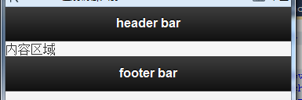
我们在此基础上改下：
1 <!DOCTYPE html> 2 <html xmlns="http://www.w3.org/1999/xhtml"> 3 <head> 4 <title></title> 5 <meta name="viewport" content="width=device-width, initial-scale=1"> 6 <link id="jquerymobile_120" rel="stylesheet" type="text/css" class="library" 7 href="/js/sandbox/jquery-mobile/jquery.mobile-1.2.0/jquery.mobile-1.2.0.css"> 8 <script id="jquery_182" type="text/javascript" class="library" 9 src="/js/sandbox/jquery/jquery-1.8.2.min.js"></script> 10 <script id="jquerymobile_120" type="text/javascript" class="library" 11 src="/js/sandbox/jquery-mobile/jquery.mobile-1.2.0/jquery.mobile-1.2.0.min.js"></script> 12 </head> 13 <body> 14 <div data-role="page"> 15 <header data-role="header"> 16 <h1>header bar</h1> 17 </header> 18 <div>内容区域</div> 19 <footer data-role="footer"> 20 <div data-role="controlgroup" data-type="horizontal" > 21 <div data-role="button" data-icon="plus" data-theme="a"> 22 添加</div> 23 <div data-role="button" data-icon="delete" data-theme="b"> 24 删除</div> 25 <div data-role="button" data-icon="refresh" data-theme="c"> 26 修改</div> 27 </div> 28 </footer> 29 </div> 30 </body> 31 </html>
http://sandbox.runjs.cn/show/icqp5f8v
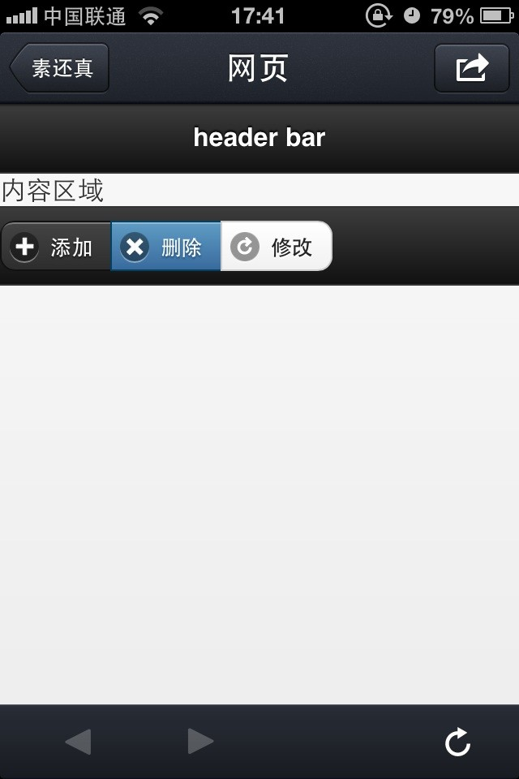
导航工具条
navbar是非常有用的，他提供不同数量的按钮组合，一般位于header或者footer中
1 <!DOCTYPE html> 2 <html xmlns="http://www.w3.org/1999/xhtml"> 3 <head> 4 <title></title> 5 <meta name="viewport" content="width=device-width, initial-scale=1"> 6 <link id="jquerymobile_120" rel="stylesheet" type="text/css" class="library" 7 href="/js/sandbox/jquery-mobile/jquery.mobile-1.2.0/jquery.mobile-1.2.0.css"> 8 <script id="jquery_182" type="text/javascript" class="library" 9 src="/js/sandbox/jquery/jquery-1.8.2.min.js"></script> 10 <script id="jquerymobile_120" type="text/javascript" class="library" 11 src="/js/sandbox/jquery-mobile/jquery.mobile-1.2.0/jquery.mobile-1.2.0.min.js"></script> 12 </head> 13 <body> 14 <div data-role="page"> 15 <header data-role="header"> 16 <h1>header bar</h1> 17 </header> 18 <div>内容区域</div> 19 <footer data-role="footer"> 20 <nav data-role="navbar"> 21 <ul> 22 <li> 23 <a href="#" class="ul-btn-active" data-icon="home">主页</a> 24 </li> 25 <li> 26 <a href="#" data-icon="search">查找</a> 27 </li> 28 <li> 29 <a href="#" data-icon="info">信息</a> 30 </li> 31 </ul> 32 </nav> 33 </footer> 34 </div> 35 36 </body> 37 </html>
http://sandbox.runjs.cn/show/pwbcm0mo
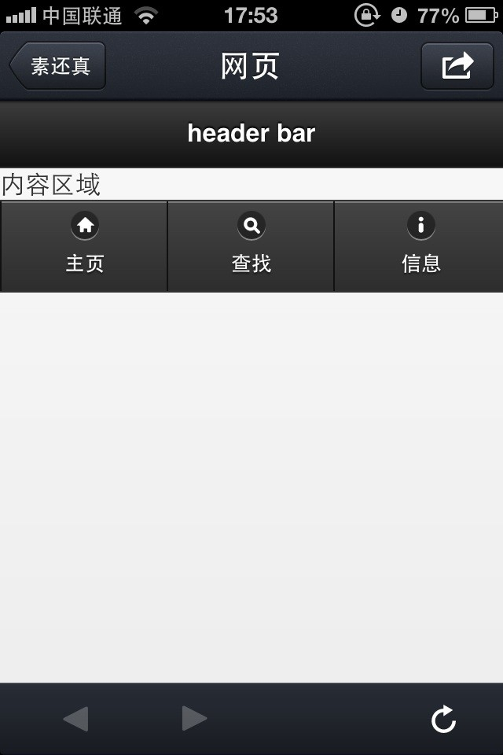
各位感觉还行吧。。。
fixed工具栏
这个家伙提供后，我们在轻触屏幕或者滑动屏幕时，header和footer都会出现或者消失
<header data-role="header" data-position="fixed">
内容区域格式布局
网格布局
jquery mobile提供一种多列布局功能，由于移动设备的屏幕大小原因，一般情况还是不要使用多列布局啦。
jquery mobile提供一种css样式规则来定义多列布局，对应css为ui-block，每列的样式是通过定义前缀+“-a”等方式对网格的列进行布局，a字母根据网格的列数而定。
例如两列布局CSS为：ui-block-a与ui-block-b
两列网格布局
1 <!DOCTYPE html> 2 <html xmlns="http://www.w3.org/1999/xhtml"> 3 <head> 4 <title></title> 5 <meta name="viewport" content="width=device-width, initial-scale=1"> 6 <link id="jquerymobile_120" rel="stylesheet" type="text/css" class="library" 7 href="/js/sandbox/jquery-mobile/jquery.mobile-1.2.0/jquery.mobile-1.2.0.css"> 8 <script id="jquery_182" type="text/javascript" class="library" 9 src="/js/sandbox/jquery/jquery-1.8.2.min.js"></script> 10 <script id="jquerymobile_120" type="text/javascript" class="library" 11 src="/js/sandbox/jquery-mobile/jquery.mobile-1.2.0/jquery.mobile-1.2.0.min.js"></script> 12 </head> 13 <body> 14 <div class="ui-grid-a"> 15 <div class="ui-block-a"> 16 <input type="button" value="确定" /> 17 </div> 18 <div class="ui-block-b"> 19 <input type="button" value="取消" /> 20 </div> 21 </div> 22 </body> 23 </html>
http://sandbox.runjs.cn/show/tdwazgd4
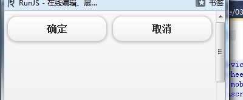
我们看见了他这些都是使用float布局的。
两列布局，需要指定外层div样式是ui-grid-a，ui-grid-a样式用于指定行列采用两列布局样式。
以上两个按钮各占屏幕的50%，采用data-line属性对按钮进行水平排列，按钮宽度根据实际文本而定。
ui-grid-a 两列
ui-grid-b 三列
ui-grid-c 四列
ui-grid-d 五列
我们来看一个三列网格布局：
1 <!DOCTYPE html> 2 <html xmlns="http://www.w3.org/1999/xhtml"> 3 <head> 4 <title></title> 5 <meta name="viewport" content="width=device-width, initial-scale=1"> 6 <link id="jquerymobile_120" rel="stylesheet" type="text/css" class="library" 7 href="/js/sandbox/jquery-mobile/jquery.mobile-1.2.0/jquery.mobile-1.2.0.css"> 8 <script id="jquery_182" type="text/javascript" class="library" 9 src="/js/sandbox/jquery/jquery-1.8.2.min.js"></script> 10 <script id="jquerymobile_120" type="text/javascript" class="library" 11 src="/js/sandbox/jquery-mobile/jquery.mobile-1.2.0/jquery.mobile-1.2.0.min.js"></script> 12 </head> 13 <body> 14 <div class="ui-grid-b"> 15 <div class="ui-block-a"> 16 <input type="button" value="确定" /> 17 </div> 18 <div class="ui-block-b"> 19 <input type="button" value="取消" /> 20 </div> 21 <div class="ui-block-c"> 22 <input type="button" value="取消" /> 23 </div> 24 </div> 25 </body> 26 </html>
http://sandbox.runjs.cn/show/wxkkjlfy
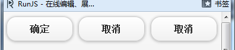
折叠功能
折叠块是移动端经常用到的效果，只要使用jquery mobile约定的编码规则并且利用HTML5的dataset特性，程序就能生成折叠快了。
其中data-role设置为collapsible，便可以创建一个可折叠的内容区，来个例子吧：
1 <!DOCTYPE html> 2 <html xmlns="http://www.w3.org/1999/xhtml"> 3 <head> 4 <title></title> 5 <meta name="viewport" content="width=device-width, initial-scale=1"> 6 <link id="jquerymobile_120" rel="stylesheet" type="text/css" class="library" 7 href="/js/sandbox/jquery-mobile/jquery.mobile-1.2.0/jquery.mobile-1.2.0.css"> 8 <script id="jquery_182" type="text/javascript" class="library" 9 src="/js/sandbox/jquery/jquery-1.8.2.min.js"></script> 10 <script id="jquerymobile_120" type="text/javascript" class="library" 11 src="/js/sandbox/jquery-mobile/jquery.mobile-1.2.0/jquery.mobile-1.2.0.min.js"></script> 12 </head> 13 <body> 14 <div data-role="collapsible"> 15 <h3>可折叠区域</h3> 16 <p>刀狂剑痴叶小钗刀狂剑痴叶小钗刀狂剑痴叶小钗刀狂剑痴叶小钗刀狂剑痴叶小钗刀狂剑痴叶小钗</p> 17 </div> 18 </body> 19 </html>
http://sandbox.runjs.cn/show/omulbkhg
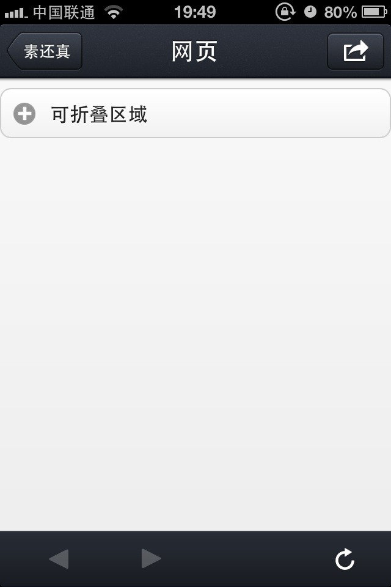
form表单
我们手机上的form表单其实都很漂亮了，但是我们的jquery mobile还是给他渲染了下下，是非常不错的。
我们来一个例子看看：
1 <!DOCTYPE html> 2 <html xmlns="http://www.w3.org/1999/xhtml"> 3 <head> 4 <title></title> 5 <meta name="viewport" content="width=device-width, initial-scale=1"> 6 <link id="jquerymobile_120" rel="stylesheet" type="text/css" class="library" 7 href="/js/sandbox/jquery-mobile/jquery.mobile-1.2.0/jquery.mobile-1.2.0.css"> 8 <script id="jquery_182" type="text/javascript" class="library" 9 src="/js/sandbox/jquery/jquery-1.8.2.min.js"></script> 10 <script id="jquerymobile_120" type="text/javascript" class="library" 11 src="/js/sandbox/jquery-mobile/jquery.mobile-1.2.0/jquery.mobile-1.2.0.min.js"></script> 12 </head> 13 <body> 14 <label for="name"> 15 姓名</label> 16 <input type="text" name="name" id="name" /> 17 <label for="password"> 18 密码</label> 19 <input type="password" name="password" id="password" /> 20 <label for="content"> 21 密码</label> 22 <textarea name="content" id="content"></textarea> 23 <label for="number"> 24 年龄</label> 25 <input type="number" name="number" id="number" /> 26 <label for="tel"> 27 手机</label> 28 <input type="tel" name="tel" id="tel" /> 29 <label for="tel"> 30 email</label> 31 <input type="email" name="email" id="email" /> 32 <label for="tel"> 33 url</label> 34 <input type="url" name="url" id="url" /> 35 <label for="search"> 36 搜索</label> 37 <input type="search" name="search" id="search" /> 38 </body> 39 </html>
http://sandbox.runjs.cn/show/by9mvtu8
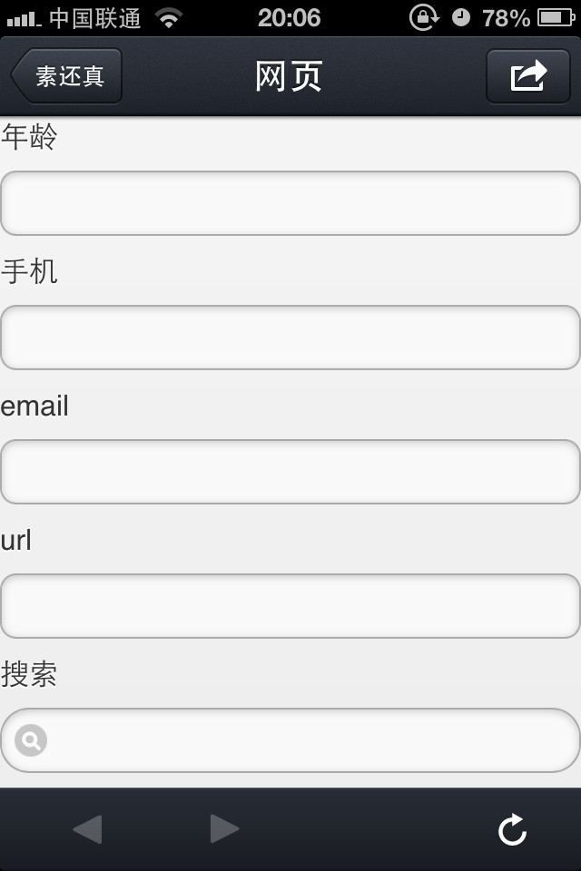
我这里喷一下《HTML5移动Web开发指南》这本书！
唐骏开写的，这家伙写的这本书不行，书中很多例子有问题。
Toggle类型
1 <!DOCTYPE html> 2 <html xmlns="http://www.w3.org/1999/xhtml"> 3 <head> 4 <title></title> 5 <meta name="viewport" content="width=device-width, initial-scale=1"> 6 <link id="jquerymobile_120" rel="stylesheet" type="text/css" class="library" 7 href="/js/sandbox/jquery-mobile/jquery.mobile-1.2.0/jquery.mobile-1.2.0.css"> 8 <script id="jquery_182" type="text/javascript" class="library" 9 src="/js/sandbox/jquery/jquery-1.8.2.min.js"></script> 10 <script id="jquerymobile_120" type="text/javascript" class="library" 11 src="/js/sandbox/jquery-mobile/jquery.mobile-1.2.0/jquery.mobile-1.2.0.min.js"></script> 12 </head> 13 <body> 14 <div data-role="fieldcontain"> 15 <label for="slider"> 16 打开开关：</label> 17 <select name="slider" id="slider" data-role="slider"> 18 <option value="off">关闭</option> 19 <option value="on">开启</option> 20 </select> 21 </div> 22 </body> 23 </html>
http://sandbox.runjs.cn/show/ty7aywwm
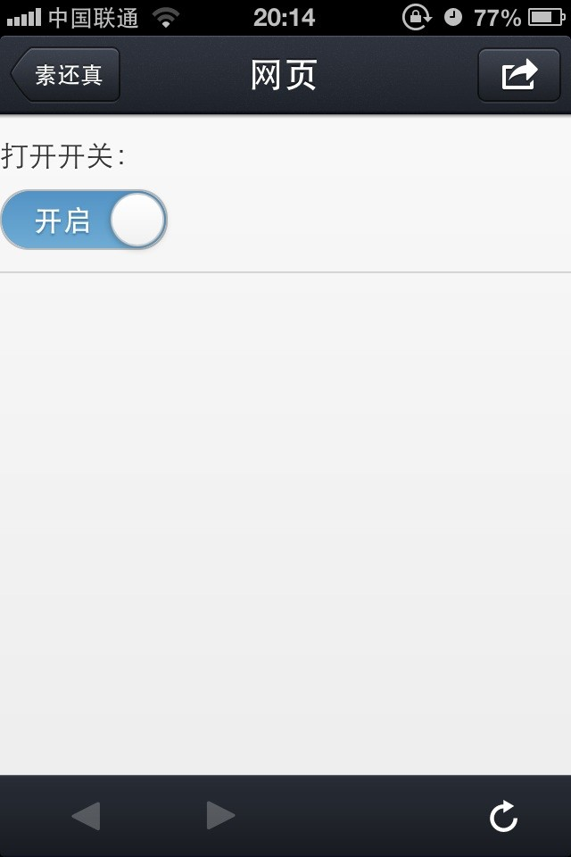
单选按钮类型
我们要创建一组单选按钮需要这样做：
1 <!DOCTYPE html> 2 <html xmlns="http://www.w3.org/1999/xhtml"> 3 <head> 4 <title></title> 5 <meta name="viewport" content="width=device-width, initial-scale=1"> 6 <link id="jquerymobile_120" rel="stylesheet" type="text/css" class="library" 7 href="/js/sandbox/jquery-mobile/jquery.mobile-1.2.0/jquery.mobile-1.2.0.css"> 8 <script id="jquery_182" type="text/javascript" class="library" 9 src="/js/sandbox/jquery/jquery-1.8.2.min.js"></script> 10 <script id="jquerymobile_120" type="text/javascript" class="library" 11 src="/js/sandbox/jquery-mobile/jquery.mobile-1.2.0/jquery.mobile-1.2.0.min.js"></script> 12 </head> 13 <body> 14 <fieldset data-role="controlgroup"> 15 <legend>请选择你的年龄范围：</legend> 16 <input type="radio" name="radio1" id="radio1" value="any" checked="checked" /> 17 <label for="radio1"> 18 不限</label> 19 <input type="radio" name="radio1" id="radio2" value="16-22" /> 20 <label for="radio2"> 21 16-22岁</label> 22 <input type="radio" name="radio1" id="radio3" value="23-30" /> 23 <label for="radio3"> 24 23-30岁</label> 25 <input type="radio" name="radio1" id="radio4" value="31-40" /> 26 <label for="radio4"> 27 31-40岁</label> 28 <input type="radio" name="radio1" id="radio5" value="40" /> 29 <label for="radio5"> 30 40岁以上</label> 31 </fieldset> 32 </body> 33 </html>
http://sandbox.runjs.cn/show/nwfuhvep
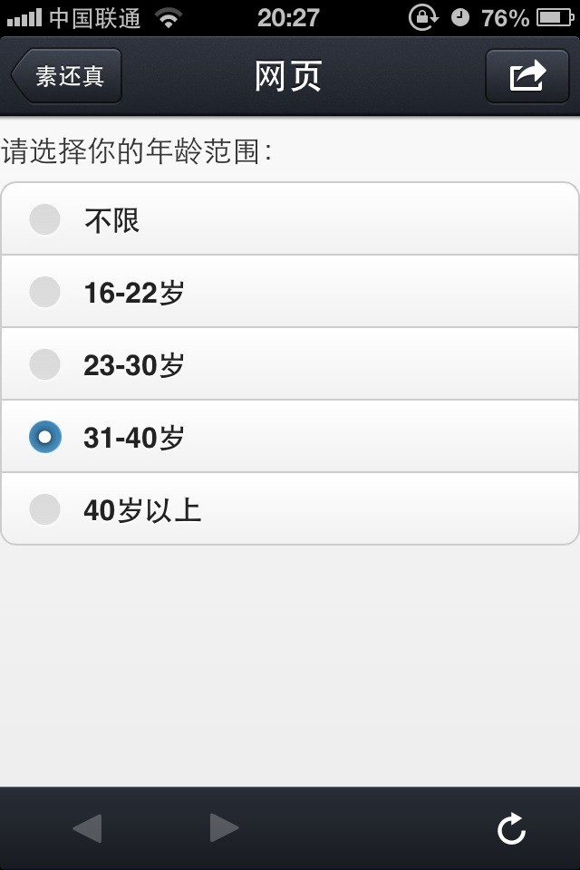
我们看到，他还是挺好看的哈。。。
我们先是竖排，我们设置一个横排的单选按钮看看：
1 <!DOCTYPE html> 2 <html xmlns="http://www.w3.org/1999/xhtml"> 3 <head> 4 <title></title> 5 <meta name="viewport" content="width=device-width, initial-scale=1"> 6 <link id="jquerymobile_120" rel="stylesheet" type="text/css" class="library" 7 href="/js/sandbox/jquery-mobile/jquery.mobile-1.2.0/jquery.mobile-1.2.0.css"> 8 <script id="jquery_182" type="text/javascript" class="library" 9 src="/js/sandbox/jquery/jquery-1.8.2.min.js"></script> 10 <script id="jquerymobile_120" type="text/javascript" class="library" 11 src="/js/sandbox/jquery-mobile/jquery.mobile-1.2.0/jquery.mobile-1.2.0.min.js"></script> 12 </head> 13 <body> 14 <fieldset data-role="controlgroup" data-type="horizontal"> 15 <legend>请选择你的年龄范围：</legend> 16 <input type="radio" name="radio1" id="radio1" value="any" checked="checked" /> 17 <label for="radio1"> 18 不限</label> 19 <input type="radio" name="radio1" id="radio2" value="16-22" /> 20 <label for="radio2"> 21 16-22岁</label> 22 <input type="radio" name="radio1" id="radio3" value="23-30" /> 23 <label for="radio3"> 24 23-30岁</label> 25 </fieldset> 26 </body> 27 </html>
http://sandbox.runjs.cn/show/vz3bjotg
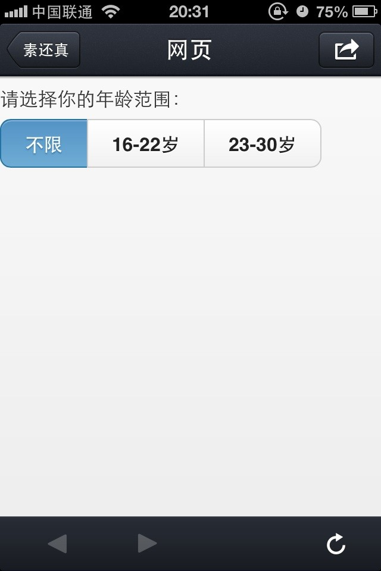
复选框
单选完了我们来看看复选框：
1 <!DOCTYPE html> 2 <html xmlns="http://www.w3.org/1999/xhtml"> 3 <head> 4 <title></title> 5 <meta name="viewport" content="width=device-width, initial-scale=1"> 6 <link id="jquerymobile_120" rel="stylesheet" type="text/css" class="library" 7 href="/js/sandbox/jquery-mobile/jquery.mobile-1.2.0/jquery.mobile-1.2.0.css"> 8 <script id="jquery_182" type="text/javascript" class="library" 9 src="/js/sandbox/jquery/jquery-1.8.2.min.js"></script> 10 <script id="jquerymobile_120" type="text/javascript" class="library" 11 src="/js/sandbox/jquery-mobile/jquery.mobile-1.2.0/jquery.mobile-1.2.0.min.js"></script> 12 </head> 13 <body> 14 <fieldset data-role="controlgroup" data-type="horizontal"> 15 <legend>爱好：</legend> 16 <input type="checkbox" name="radio1" id="radio1" value="any" checked="checked" /> 17 <label for="radio1"> 18 足球</label> 19 <input type="checkbox" name="radio1" id="radio2" value="16-22" /> 20 <label for="radio2"> 21 篮球</label> 22 <input type="checkbox" name="radio1" id="radio3" value="23-30" /> 23 <label for="radio3"> 24 编码（危险）</label> 25 </fieldset> 26 </body> 27 </html>
http://sandbox.runjs.cn/show/1zpxdut8
下拉菜单
1 <!DOCTYPE html> 2 <html xmlns="http://www.w3.org/1999/xhtml"> 3 <head> 4 <title></title> 5 <meta name="viewport" content="width=device-width, initial-scale=1"> 6 <link id="jquerymobile_120" rel="stylesheet" type="text/css" class="library" 7 href="/js/sandbox/jquery-mobile/jquery.mobile-1.2.0/jquery.mobile-1.2.0.css"> 8 <script id="jquery_182" type="text/javascript" class="library" 9 src="/js/sandbox/jquery/jquery-1.8.2.min.js"></script> 10 <script id="jquerymobile_120" type="text/javascript" class="library" 11 src="/js/sandbox/jquery-mobile/jquery.mobile-1.2.0/jquery.mobile-1.2.0.min.js"></script> 12 </head> 13 <body> 14 <div data-role="controlgroup"> 15 <label class="select"> 16 请选择兴趣 17 <select> 18 <option>电影</option> 19 <option>体育</option> 20 <option>旅游</option> 21 </select> 22 </label> 23 24 <label class="select"> 25 请选择兴趣（多选） 26 <select> 27 <optgroup label="一般类"> 28 <option>电影</option> 29 <option>体育</option> 30 <option>旅游</option> 31 </optgroup> 32 <optgroup label="特殊类"> 33 <option>C</option> 34 <option>C++</option> 35 <option>Java</option> 36 </optgroup> 37 </select> 38 </label> 39 </div> 40 </body> 41 </html>
http://sandbox.runjs.cn/show/zu0zsl2w
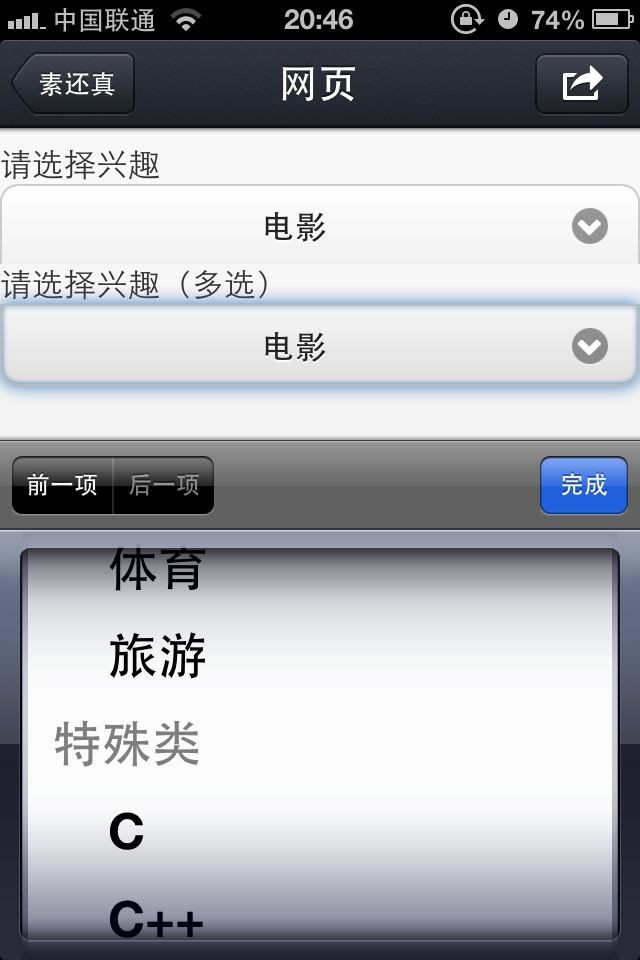
我们这里做一点改变，样式会发生变化：
 View Code
View Codehttp://sandbox.runjs.cn/show/ynvpsuyw
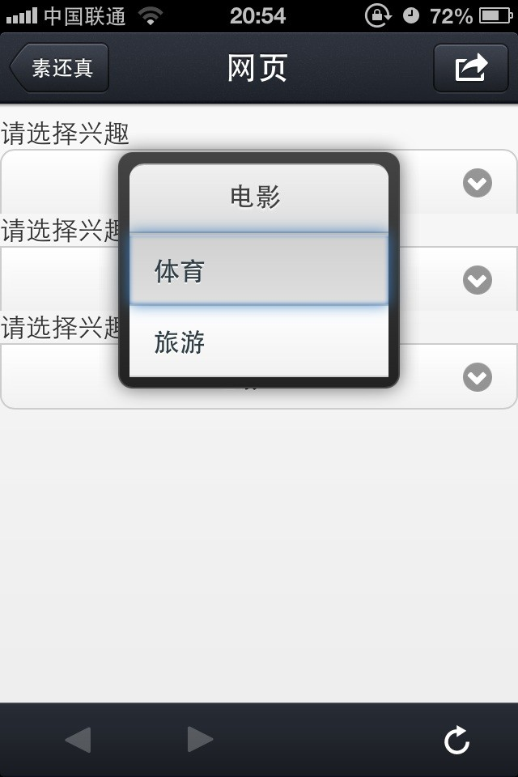
List列表
在移动设备平台下，由于移动设备屏幕比较小，我们又是用手在上面点击的触屏方式，传统的列表模式在手机上就不太友好了。
虽然HTML5与CSS3提供了强大的界面实现方案，jquery mobile作为jquery框架的一个移动web插件，他根据移动屏幕大小优化了UI组件，
列表组件就是jquery mobile根据移动设备的特性而实现的组件库之一。
我们来一个个看看我们的列表吧
普通链接列表
1 <!DOCTYPE html> 2 <html xmlns="http://www.w3.org/1999/xhtml"> 3 <head> 4 <title></title> 5 <meta name="viewport" content="width=device-width, initial-scale=1"> 6 <link id="jquerymobile_120" rel="stylesheet" type="text/css" class="library" 7 href="/js/sandbox/jquery-mobile/jquery.mobile-1.2.0/jquery.mobile-1.2.0.css"> 8 <script id="jquery_182" type="text/javascript" class="library" 9 src="/js/sandbox/jquery/jquery-1.8.2.min.js"></script> 10 <script id="jquerymobile_120" type="text/javascript" class="library" 11 src="/js/sandbox/jquery-mobile/jquery.mobile-1.2.0/jquery.mobile-1.2.0.min.js"></script> 12 </head> 13 <body> 14 <div data-role="page"> 15 <header data-role="header"> 16 <h1> 17 普通链接列表</h1> 18 </header> 19 <div data-role="content"> 20 <ul data-role="listview" data-theme="g"> 21 <li><a href="01.htm">刀狂剑痴叶小钗</a> </li> 22 <li><a href="01.htm">刀狂剑痴叶小钗</a> </li> 23 <li><a href="01.htm">刀狂剑痴叶小钗</a> </li> 24 <li><a href="01.htm">刀狂剑痴叶小钗</a> </li> 25 <li><a href="01.htm">刀狂剑痴叶小钗</a> </li> 26 </ul> 27 </div> 28 </div> 29 </body> 30 </html>
http://sandbox.runjs.cn/show/icriwnze
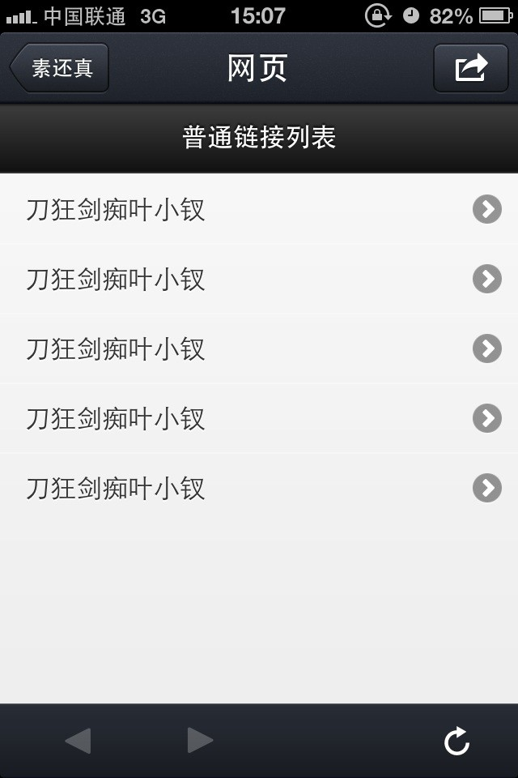
多层次嵌套列表
1 <!DOCTYPE html> 2 <html xmlns="http://www.w3.org/1999/xhtml"> 3 <head> 4 <title></title> 5 <meta name="viewport" content="width=device-width, initial-scale=1"> 6 <link id="jquerymobile_120" rel="stylesheet" type="text/css" class="library" 7 href="/js/sandbox/jquery-mobile/jquery.mobile-1.2.0/jquery.mobile-1.2.0.css"> 8 <script id="jquery_182" type="text/javascript" class="library" 9 src="/js/sandbox/jquery/jquery-1.8.2.min.js"></script> 10 <script id="jquerymobile_120" type="text/javascript" class="library" 11 src="/js/sandbox/jquery-mobile/jquery.mobile-1.2.0/jquery.mobile-1.2.0.min.js"></script> 12 </head> 13 <body> 14 <div data-role="page"> 15 <header data-role="header"> 16 <h1> 17 普通链接列表</h1> 18 </header> 19 <div data-role="content"> 20 <ul data-role="listview" data-theme="g"> 21 <li><a href="01.htm">刀狂剑痴叶小钗</a> 22 <p> 23 子级list</p> 24 <ul> 25 <li><a href="01.htm">清香白莲素还真</a></li> 26 <li><a href="01.htm">清香白莲素还真</a></li> 27 </ul> 28 </li> 29 <li><a href="01.htm">刀狂剑痴叶小钗</a> </li> 30 <li><a href="01.htm">刀狂剑痴叶小钗</a> 31 <p> 32 子级list</p> 33 <ul> 34 <li><a href="01.htm">清香白莲素还真</a></li> 35 <li><a href="01.htm">清香白莲素还真</a></li> 36 </ul> 37 </li> 38 <li><a href="01.htm">刀狂剑痴叶小钗</a> </li> 39 <li><a href="01.htm">刀狂剑痴叶小钗</a> </li> 40 </ul> 41 </div> 42 </div> 43 </body> 44 </html>
http://sandbox.runjs.cn/show/wc1n0sto
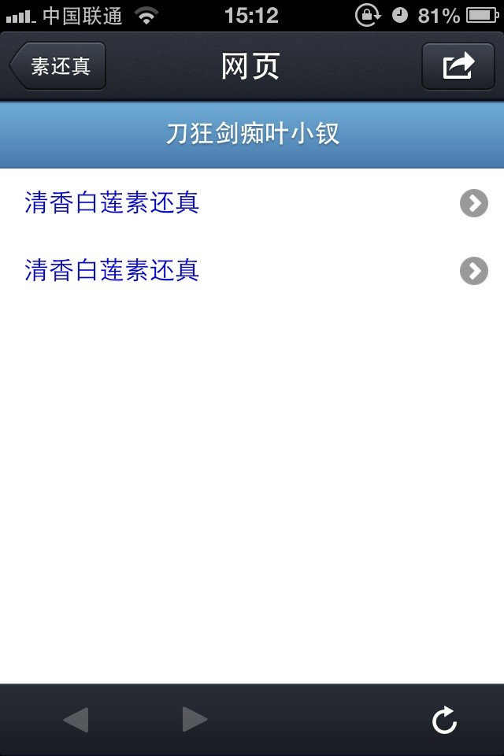
这个嵌套列表，我们点击第一个后便可以看到这个啦。
列表分隔符
我们有时候会碰到需要对列表进行分组的功能，具有分组效果的列表可以在li元素上设置data-role属性为list-divider来实现。
1 <!DOCTYPE html> 2 <html xmlns="http://www.w3.org/1999/xhtml"> 3 <head> 4 <title></title> 5 <meta name="viewport" content="width=device-width, initial-scale=1"> 6 <link id="jquerymobile_120" rel="stylesheet" type="text/css" class="library" 7 href="/js/sandbox/jquery-mobile/jquery.mobile-1.2.0/jquery.mobile-1.2.0.css"> 8 <script id="jquery_182" type="text/javascript" class="library" 9 src="/js/sandbox/jquery/jquery-1.8.2.min.js"></script> 10 <script id="jquerymobile_120" type="text/javascript" class="library" 11 src="/js/sandbox/jquery-mobile/jquery.mobile-1.2.0/jquery.mobile-1.2.0.min.js"></script> 12 </head> 13 <body> 14 <div data-role="page"> 15 <header data-role="header"> 16 <h1> 17 列表分割</h1> 18 </header> 19 <div data-role="content"> 20 <ul data-role="listview" data-theme="g"> 21 <li data-role="list-divider">霹雳三巨头</li> 22 <li><a href="01.htm">清香白莲素还真</a> </li> 23 <li><a href="01.htm">百世经纶一页书</a> </li> 24 <li><a href="01.htm">刀狂剑痴叶小钗</a> </li> 25 <li data-role="list-divider">火影三巨头</li> 26 <li><a href="01.htm">宇智波斑</a> </li> 27 <li><a href="01.htm">初代火影</a> </li> 28 <li><a href="01.htm">六道仙人</a> </li> 29 <li data-role="list-divider">金光三巨头</li> 30 <li><a href="01.htm">史艳文</a> </li> 31 <li><a href="01.htm">藏镜人</a> </li> 32 <li><a href="01.htm">黑白郎君南宫很</a> </li> 33 </ul> 34 </div> 35 </div> 36 </body> 37 </html>
http://sandbox.runjs.cn/show/x34523jv
列表搜索
当设置data-filter为true时便具有了搜索功能了
1 <!DOCTYPE html> 2 <html xmlns="http://www.w3.org/1999/xhtml"> 3 <head> 4 <title></title> 5 <meta name="viewport" content="width=device-width, initial-scale=1"> 6 <link id="jquerymobile_120" rel="stylesheet" type="text/css" class="library" 7 href="/js/sandbox/jquery-mobile/jquery.mobile-1.2.0/jquery.mobile-1.2.0.css"> 8 <script id="jquery_182" type="text/javascript" class="library" 9 src="/js/sandbox/jquery/jquery-1.8.2.min.js"></script> 10 <script id="jquerymobile_120" type="text/javascript" class="library" 11 src="/js/sandbox/jquery-mobile/jquery.mobile-1.2.0/jquery.mobile-1.2.0.min.js"></script> 12 </head> 13 <body> 14 <div data-role="page"> 15 <header data-role="header"> 16 <h1> 17 列表分割</h1> 18 </header> 19 <div data-role="content"> 20 <ul data-role="listview" data-theme="g" data-filter="true"> 21 <li><a href="01.htm">清香白莲素还真</a> </li> 22 <li><a href="01.htm">百世经纶一页书</a> </li> 23 <li><a href="01.htm">刀狂剑痴叶小钗</a> </li> 24 <li><a href="01.htm">宇智波斑</a> </li> 25 <li><a href="01.htm">初代火影</a> </li> 26 <li><a href="01.htm">六道仙人</a> </li> 27 <li><a href="01.htm">史艳文</a> </li> 28 <li><a href="01.htm">藏镜人</a> </li> 29 <li><a href="01.htm">黑白郎君南宫很</a> </li> 30 <li><a href="01.htm">清香白莲素还真</a> </li> 31 <li><a href="01.htm">百世经纶一页书</a> </li> 32 <li><a href="01.htm">刀狂剑痴叶小钗</a> </li> 33 <li><a href="01.htm">宇智波斑</a> </li> 34 <li><a href="01.htm">初代火影</a> </li> 35 <li><a href="01.htm">六道仙人</a> </li> 36 <li><a href="01.htm">史艳文</a> </li> 37 <li><a href="01.htm">藏镜人</a> </li> 38 <li><a href="01.htm">黑白郎君南宫很</a> </li> 39 </ul> 40 </div> 41 </div> 42 </body> 43 </html>
http://sandbox.runjs.cn/show/f8oxhkfs
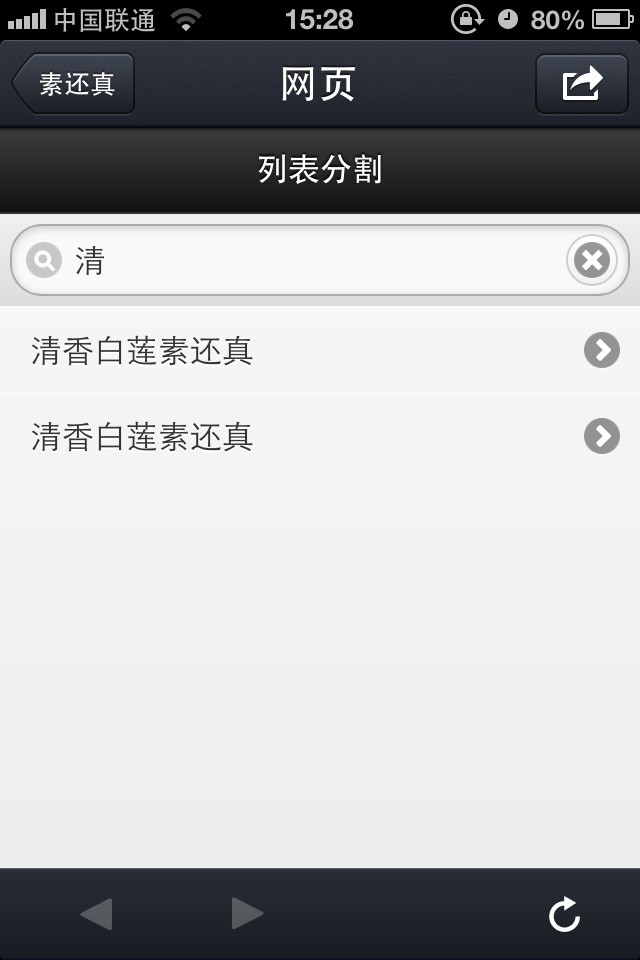
这个是界面上的搜索与数据库没关系。
内嵌列表
1 <!DOCTYPE html> 2 <html xmlns="http://www.w3.org/1999/xhtml"> 3 <head> 4 <title></title> 5 <meta name="viewport" content="width=device-width, initial-scale=1"> 6 <link id="jquerymobile_120" rel="stylesheet" type="text/css" class="library" 7 href="/js/sandbox/jquery-mobile/jquery.mobile-1.2.0/jquery.mobile-1.2.0.css"> 8 <script id="jquery_182" type="text/javascript" class="library" 9 src="/js/sandbox/jquery/jquery-1.8.2.min.js"></script> 10 <script id="jquerymobile_120" type="text/javascript" class="library" 11 src="/js/sandbox/jquery-mobile/jquery.mobile-1.2.0/jquery.mobile-1.2.0.min.js"></script> 12 </head> 13 <body> 14 <div data-role="page"> 15 <header data-role="header"> 16 <h1> 17 列表分割</h1> 18 </header> 19 <div data-role="content"> 20 <ul data-role="listview" data-theme="g" data-inset="true"> 21 <li><a href="01.htm">清香白莲素还真<span class="ui-li-count">30</span></a> </li> 22 <li><a href="01.htm">百世经纶一页书<span class="ui-li-count">30</span></a> </li> 23 <li><a href="01.htm">刀狂剑痴叶小钗<span class="ui-li-aside">本命</span></a> </li> 24 </ul> 25 <ol data-role="listview" data-theme="g" data-inset="true"> 26 <li><a href="01.htm">宇智波斑</a> </li> 27 <li><a href="01.htm">初代火影</a> </li> 28 <li><a href="01.htm">六道仙人</a> </li> 29 </ol> 30 <ul data-role="listview" data-theme="g" data-inset="true"> 31 <li><a href="01.htm">史艳文</a> </li> 32 <li><a href="01.htm">藏镜人</a> </li> 33 <li><a href="01.htm">黑白郎君南宫很</a> </li> 34 </ul> 35 </div> 36 </div> 37 </body> 38 </html>
http://sandbox.runjs.cn/show/lpjnjowv
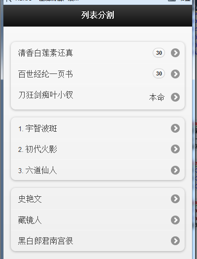
列表的性能问题
jquery mobile虽然提供了非常丰富的列表类型，但大部分类型都是针对不同需求而实现的内容格式列表。
实际上，jquery mobile并没有实现列表的分页功能，当数据量非常大时需要有分页功能，在前面说过，jquery mobile提供一种可搜索过滤列表类型的列表。
前面我们就说了没有通过数据库检索，可能出现数据量非常大的情况，对性能，对流量都不好，检索时候可能出现假死的情况。
所以使用list功能需要慎重。
Event事件
好了，基本UI方面的我们就看完了，现在我们来看看事件方面的东西。
jquery mobile提供了丰富的事件处理机制，并且根据不同的移动设备，整合各种事件，使得开发者不必解决不同设备之间的事件处理差异。
页面加载事件
我们在页面中会使用
$(document).ready()
它的作用是当加载完成一个web页面的Dom结构后就运行该方法。
在移动web应用程序时，仍然可以使用这个功能，但是jquery mobile的机制是每个视图和页面的内容都是使用ajax请求加载的，这样每次显示一个新视图或者新页面都没办法调用readey方法，这不是我们想要的结果。
所以针对jquery mobile提供了这个方法解决这个问题：pageCreate事件，该事件的含义是当视图或页面被切换时触发的。
1 $('#page').live('pagecreate', function (e) { 2 alert('触发之'); 3 });
touch事件
jquery mobile提供了最基本的触摸事件：touch事件
tap：
快速触摸屏幕并离开，类似于一次完整的点击事件
taphold：
触摸屏幕并保持一段时间
swipe：
在1秒内水平移动30px屏幕像素以上时触发
swipeleft：
向左侧滑动
swiperight：
向右侧滑动
方向改变事件
orientationchange事件函数当移动设备方向发生改变时触发。
在事件回调函数内的第二个参数返回一个用于识别当前方向的参数，该参数只会返回两种值：portrait（纵向）和landscape（横向）
但是该事件不是所有浏览器都支持，所以使用要慎重。
滚动事件
目前jquery mobile支持两种滚动事件
scrollstart
开始滚动时触发，需要注意是ios上该事件不稳定，原因是ios在滚动时会禁止dom操作
会将dom操作放入队列中，待滚动结束后才执行这些操作，但是估计现在解决了。
scrollend
在滚动结束时触发
显示/隐藏事件
在基于jquery mobile的移动web应用中，我们知道一个web页面存在多个不同的视图或页面，但每次只会显示一个。
当显示其中一个视图时其余都会隐藏，每次视图切换都会触发显示/隐藏事件
pagebeforeshow
当视图通过动画效果开始显示在屏幕之前触发事件
pagebeforehide
当视图通过动画效果开始隐藏之前触发事件
pageshow
当视图通过动画效果显示在屏幕之后触发事件
pagehide
当视图通过动画效果隐藏后触发事件
没切换一次页面，4钟事件都会被触发，例如：
当a视图切换到b视图时，首先触发a视图的pagebeforeshow事件和b视图的pagebeforehide事件
当b视图完成切换动画效果后完整的显示在屏幕中时，会触发a视图的pagehide事件和b视图的pageshow事件
虚拟鼠标事件
jquery mobile提供了一种虚拟点击事件来整合不同设备中mouse和touch事件
vmouseover
统一处理触摸和鼠标悬停事件
vmousedown
统一处理触摸和鼠标按下事件
vmousemove
处理触摸和鼠标移动事件
vmouseup
处理触摸和鼠标松开事件
vclick
处理触摸和鼠标点击事件
vmousecancel
处理触摸和鼠标离开事件
结语
我们队jquery mobile的学习暂时到这里，接下来我们在学习下phonegap，然后就实战一下下。